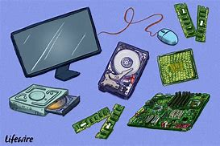
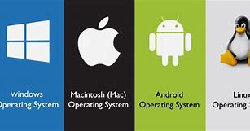
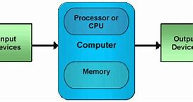

Introduction to Computers
Welcome to the world of computers! This section will introduce you to the fundamental concepts of computing.
A computer is an electronic device that manipulates information, or data. It has the ability to store, retrieve, and process data.
Hardware Basics
Hardware refers to the physical components of a computer.
- CPU (Central Processing Unit): The brain of the computer.
- RAM (Random Access Memory): Temporary storage for running programs.
- Hard Drive: Permanent storage for files and programs.
- Monitor: Displays visual output.
- Keyboard & Mouse: Input devices.
Software Basics

Software is a set of instructions that tells the computer what to do.
- Operating System (OS): Manages hardware and software resources.
- Applications: Programs designed for specific tasks (e.g., word processing, web browsing).
Operating Systems
An operating system (OS) is the software that manages computer hardware and software resources and provides common services for computer programs.
- Windows
- macOS
- Linux
File Management
File management involves organizing and storing files on a computer.
- Creating folders
- Copying and moving files
- Renaming and deleting files
Internet Basics
The internet is a global network of computers.
- Web browsers
- Search engines
Basic Operations
Learn how to perform essential computer tasks.
- Turning the computer on and off
- Using the keyboard and mouse
- Opening and closing applications
- Saving and opening files